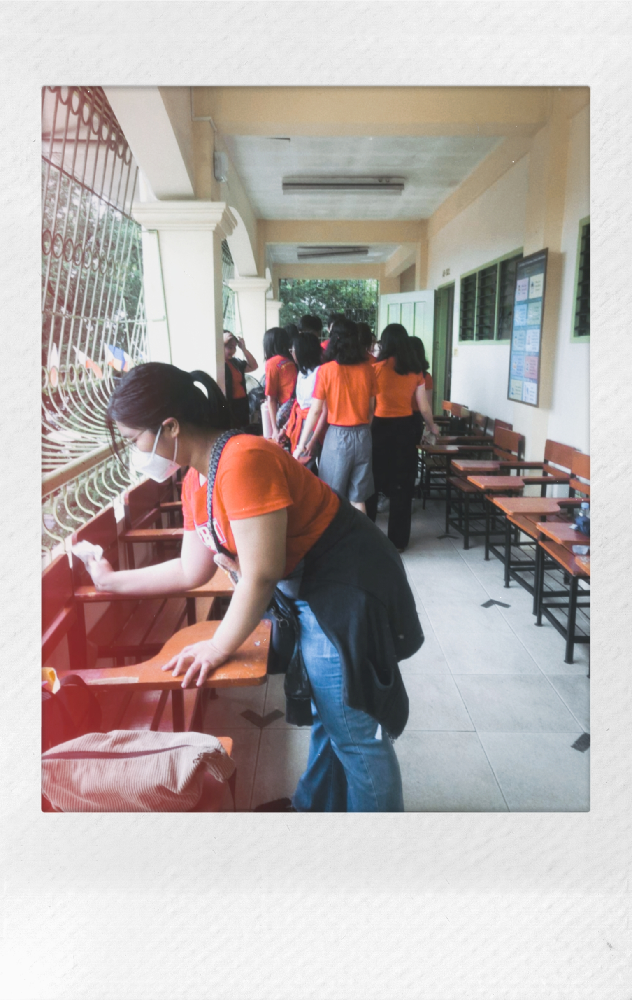
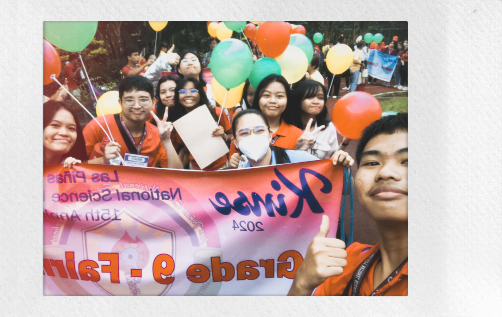
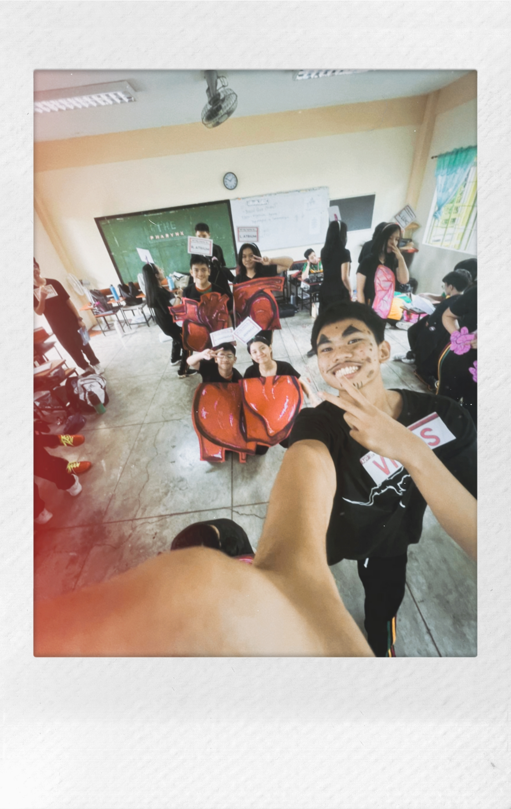
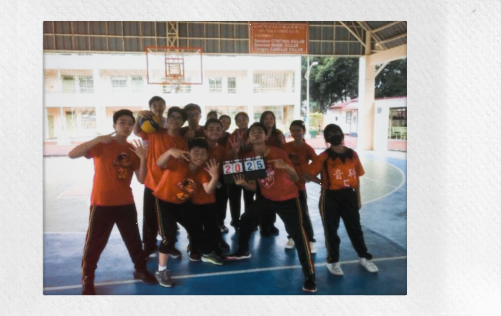
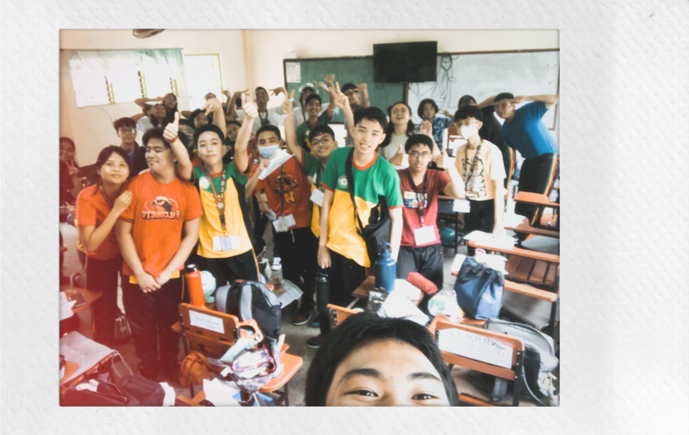

| BRIGADA ESKWELA |
|  |
| I joined the brigada eskwela for this S.Y. We cleaned the classroom together with Ms. Mei. |
| LPSCI 15TH FOUNDATION DAY |
|  |
| The first big event of Lpsci this year was the 15th anniversary celebration. I was there with my friends. The activities was so much fun! A core memory indeed! |
| SCINCE HUMAN SIMULATOR |
|  |
| This was our first big project. I really enjoyed planning and preparing for this groupwork. My groupmates were so creative, they inspired me to my best. I was so proud with the props team (as you can see, the props we have on the picture is so detailed and good) I was their script writer along with my 2 other groupmates. This was a very enjoyable and both groups got 100% score for this PT. |
| VOLLEYBALL |
|  |
| I was a part of red team in our volleball PT for MAPEH. We won the firat game and the overall game. I played in both games and I can say that I fell in love with the sport. Learning it was super fun that is why I also joined the volleyball for intrams. |
| FILIPINO DEBATE |
|  |
| This was our Filipino debate. I am not fond of public speaking and believe me when I tell you that my whole body was shaking when I was arguing my point. I was so nervous but I am glad that I was able to defend our side. |
| ESP PRESENTATION |
| We did this presentation per barangay. I was group with the people that are near my place. We presented this after our volleyball game. |
| ENGLISH SONG PRESENTATION |
| This was our English Presentation. We made a parody of 3 different songs. The lyrics contains second conditional sentences which is related to our lessons. |
MAPEH MUSIC VIDEO |
| This is another PT that we had in MAPEH. This was about enviromental issue and we decided to choose the song "From the Start" by Laufey. This was my first time editing a video and I was proud that it turned out decent. I hope to improve more in the next quarters. |